CZĘŚĆ A • ŚLEDZTWO
FRYTKI ZJEDZONE.
ZOSTAŁ GARNEK OLEJU.
CO TERAZ?
Najprościej - wylać do zlewu. Chwila… dokładnie tak myśli większość ludzi. Sprawdźmy, co się wtedy dzieje.


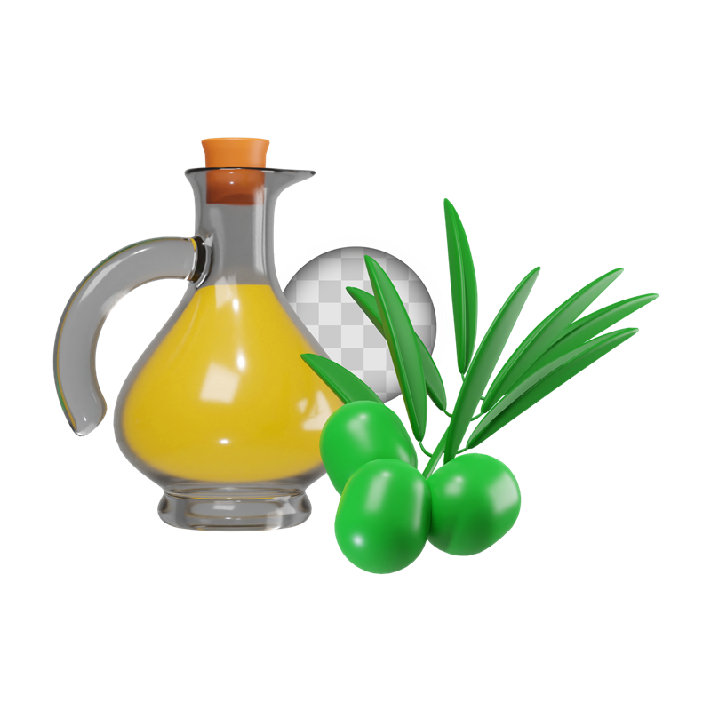
ODPRAWA AGENTA
Misja tajny agent • klasy 4–5 • Olejomaty i PSZOK
MIASTO STANĘŁO.
KANALIZACJA ZATKANA.
KTO TO ZROBIŁ?
Detektyw SELEKT otwiera akta sprawy. Pójdziesz jego tropem: od kuchni, przez Olejomat, aż po PSZOK. Po drodze zbierz 5 liter tajnego kodu — na końcu dowiesz się, kto był winny.
TRENING AGENTA
SOKOLI
WZROK
Zanim ruszysz w teren — znajdź wspólne symbole szybciej niż przeciwnik!
ROZDZIAŁ PIERWSZY
Śledztwo: co robi olej w rurach?
CZĘŚĆ A • ŚLEDZTWO
FRYTKI ZJEDZONE.
ZOSTAŁ GARNEK OLEJU.
CO TERAZ?
Najprościej - wylać do zlewu. Chwila… dokładnie tak myśli większość ludzi. Sprawdźmy, co się wtedy dzieje.

GORĄCY OLEJ + ZIMNA RURA =
KOREK TWARDY JAK BETON
W zimnej rurze tłuszcz zastyga. Skleja się z resztkami w twardy zator i woda nie ma którędy płynąć. Awaria gotowa. To fizyka - nie pech.
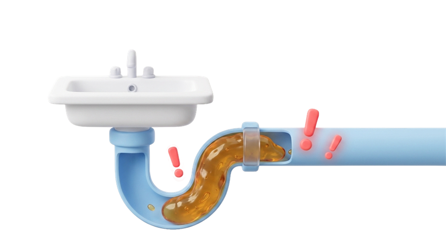
42 mln ton
TYLE ZUŻYTEGO OLEJU POWSTAJE CO ROKU NA ŚWIECIE
A ponad połowa z nas wciąż wylewa go do zlewu albo do czarnego pojemnika. To nie jeden przypadek - to codzienny nawyk milionów ludzi. Dlatego potrzeba czegoś więcej niż dobrych chęci.
×45
Dla porównania: całkowita ilość światowych odpadów olejowych, tylko z jednego roku, wystarczyłaby, aby wypełnić po sam dach aż 45 Stadionów Narodowych!
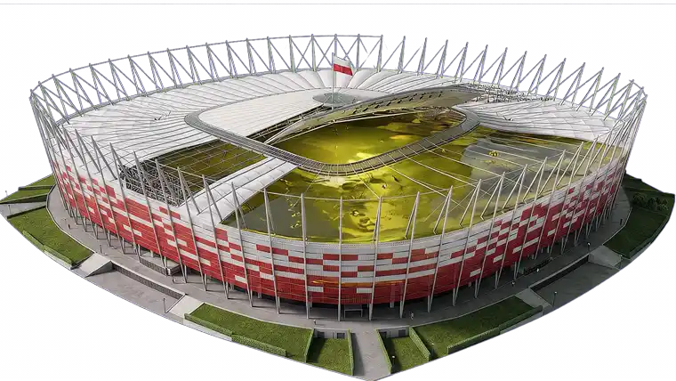
TO MOŻE DO KOSZA BIO?
TEŻ NIE.
Tłuszcz psuje kompost i wabi szkodniki. A olej wylany do rzeki? Tworzy na wodzie warstwę, która odcina tlen — ryby się duszą. Dwa pomysły, które wyglądają OK. Oba złe. Musi istnieć trzecia droga.
🧩 ZAGADKA 1
Znasz już dwie fałszywe ścieżki. Udowodnij, że nikt Cię na nie nie nabierze.
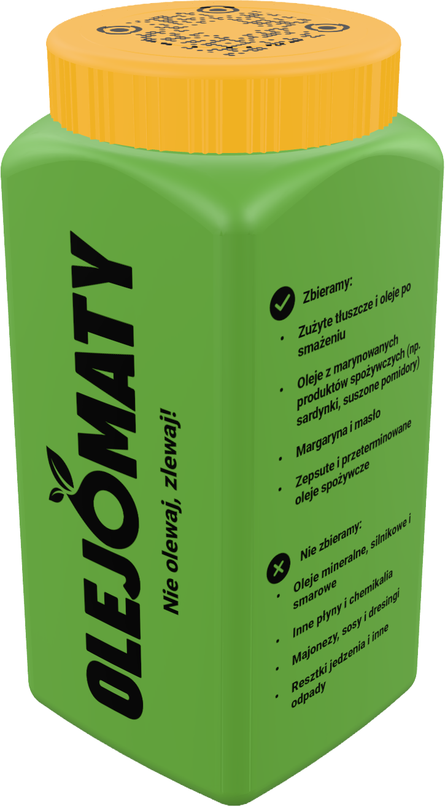
CZĘŚĆ A • ROZWIĄZANIE
PO TO JEST
OLEJOMAT
Maszyna, która czeka dokładnie na ten olej. Nie do rur, nie do BIO — do butelki i do Olejomatu. Problem znika, a olej… dopiero zaczyna karierę.
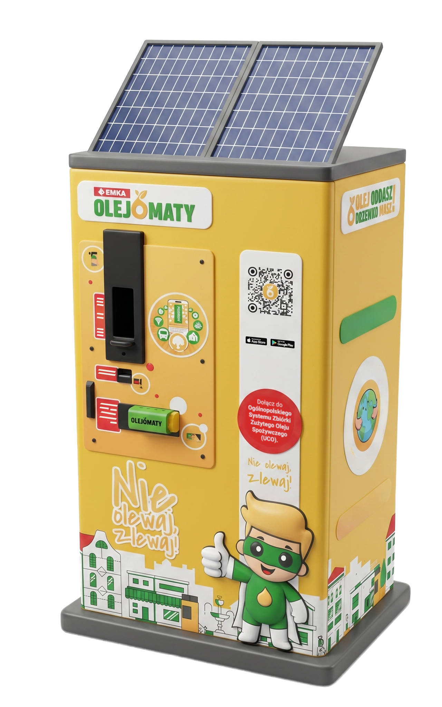
CO SIĘ DZIEJE W ŚRODKU?
CHEMICZNA PRALKA
W rafinerii olej bierze kąpiel: brud zostaje oddzielony, a z czystej reszty powstaje biodiesel — paliwo do silników. Dzisiejszy odpad = jutrzejsze paliwo. Przewiń — zobacz cały proces! ↓
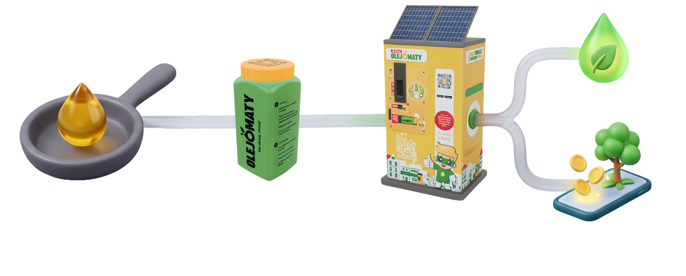
CO WOLNO WRZUCIĆ?
Kliknij kartę i poznaj odpowiedź — oraz DLACZEGO. Każda zasada ma swój powód.
To czysty tłuszcz roślinny — dokładnie to, co maszyna umie przerobić. Resztki frytek mogą zostać!
To chemia, nie jedzenie. Jedna taka butelka psuje CAŁĄ partię zebranego oleju.
Maksymalnie 70°C. Gorący olej parzy i niszczy butelkę. Poczekaj chwilę — wystygnie.
Czysta, plastikowa, mocno zakręcona — żeby nic się nie rozlało po drodze.
👆 Najedź lub kliknij, żeby odwrócić kartę
🧩 ZAGADKA 2
Znasz już karty. Teraz bez podpowiedzi — co wolno wlać do Olejomatu?
OLEJ ZDASZ —
DRZEWKO MASZ!
Za każdą oddaną butelkę dostajesz punkty w aplikacji i wymieniasz je na nagrody — na przykład sadzonki drzew. A w Japonii stary olej napędza nawet samoloty!

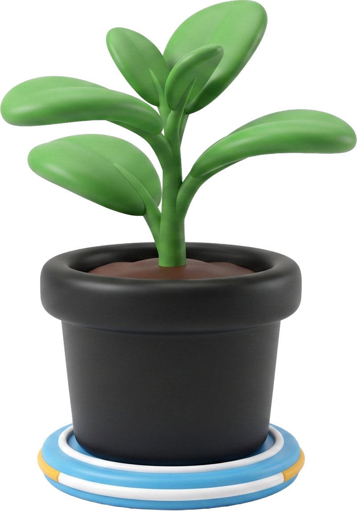
A JEŚLI W OKOLICY
NIE MA OLEJOMATU?
Spokojnie. Jest miejsce, które przyjmie olej — i całą resztę kłopotliwych rzeczy: stary telefon, farby po remoncie, nawet kanapę. Część B śledztwa — przed Tobą.
ROZDZIAŁ DRUGI
Śledztwo: kłopotliwe odpady
STARY TELEFON. FARBA. KANAPA.
KTÓRY KOLOROWY POJEMNIK?
…ŻADEN.
Pięć kolorowych pojemników nie wystarcza na wszystko. I właśnie tu zaczynają się kłopoty.
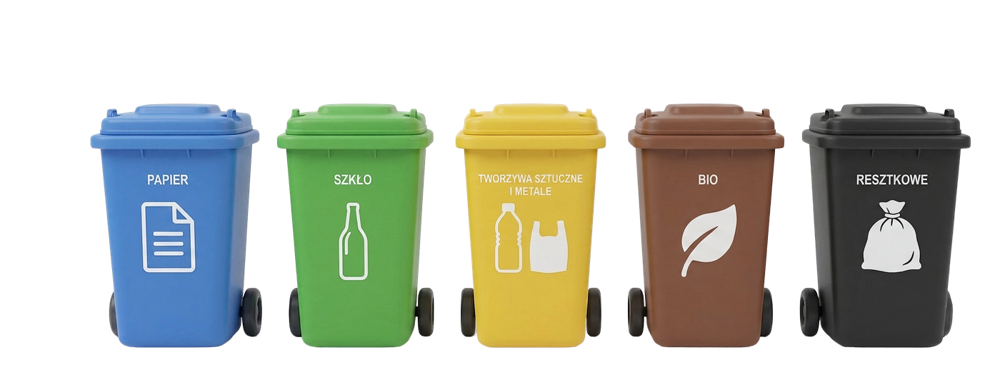
ŚWIETLÓWKA W ZWYKŁYM KOSZU?
SKAŻONE WSZYSTKO.
Chemia z jednej stłuczonej świetlówki brudzi czyste surowce obok. A przy taśmie sortowniczej pracują ludzie — dla nich to realne zagrożenie.

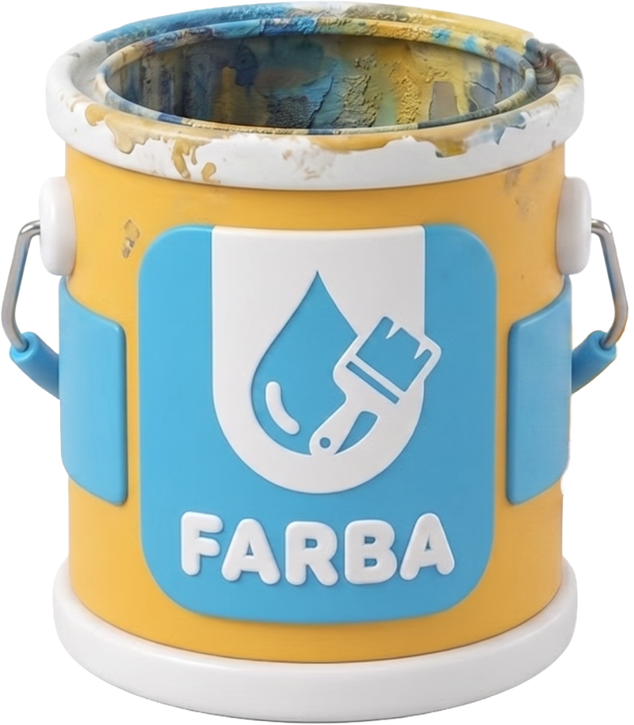
🧩 ZAGADKA 3
Sześć przedmiotów. Jedna decyzja przy każdym. Nie daj się zmylić!
2 100+
PUNKTÓW PSZOK DZIAŁA JUŻ W POLSCE
Polacy oddają w nich pół miliona ton kłopotliwych odpadów rocznie — i z roku na rok coraz więcej. Coraz więcej osób rozumie, po co to miejsce istnieje.
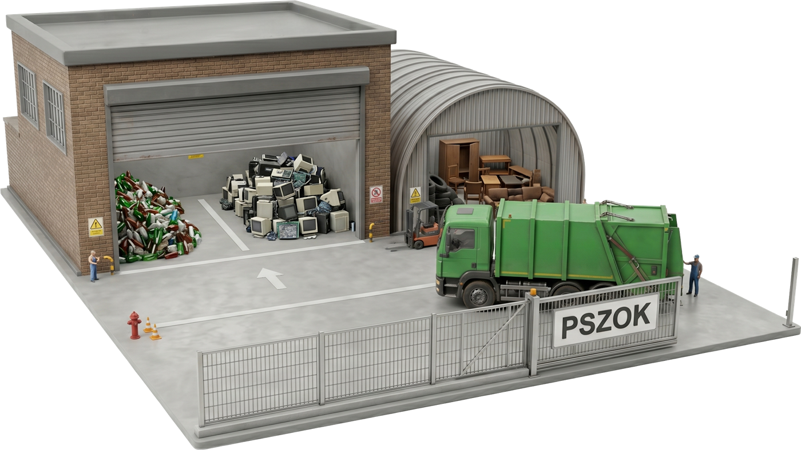
CZĘŚĆ B • ROZWIĄZANIE
PSZOK:
BEZKOLIZYJNY ZJAZD
Zwykłe śmieci to auta na autostradzie — jadą prosto do sortowni. Kanapa czy farba to ciężarówka pod prąd: karambol gotowy. PSZOK to bezpieczny zjazd z autostrady, zbudowany specjalnie dla nich.
A W ŚRODKU?
MIEJSKA KOPALNIA
Tu rozbraja się „chemiczne bomby" — farby i świetlówki, zanim trafią do wody. I odzyskuje skarby: złoto, srebro i miedź ze starych telefonów. Dzięki temu nie trzeba kopać nowych kopalni.
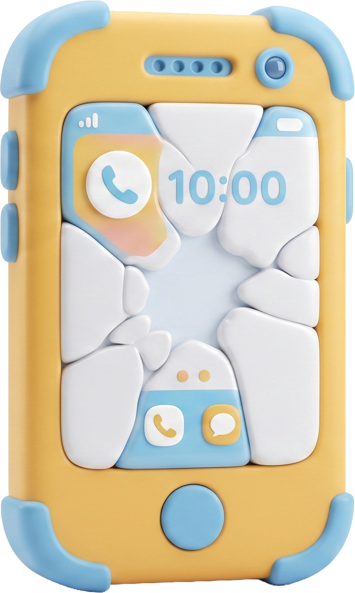
STREFY PSZOK
Każda strefa = inny odpad. Przewiń — przejdziemy przez strefy jedna po drugiej.
PSZOK to nie jedno wielkie miejsce na wszystko naraz. To zbiór oznaczonych stref. Każda frakcja jest oddzielona ze względu na rozmiar, budowę, możliwość odzysku albo potrzebę ostrożnego postępowania. Przejdź przez 14 stref po kolei.
Pomiń animację →1/14
Gałęzie, trawa, liście i resztki roślinne trafiają do oznaczonej strefy. Zebrane osobno mogą zostać właściwie zagospodarowane.
2/14
Cegły, beton, płytki i ceramika są ciężkie i nie pasują do zwykłego pojemnika. W PSZOK-u mają oddzielne miejsce.
3/14
Opony są trwałe i zbudowane z kilku materiałów. Zbiera się je osobno, aby przekazać je do właściwego procesu.
4/14
Papier zwykle segregujemy w domu. Większe ilości kartonu i tektury mogą mieć także osobną strefę w PSZOK-u — zgodnie z lokalnymi zasadami.
5/14
Butelki i słoiki powinny pozostać oddzielone od ceramiki, luster i innych rodzajów szkła. Sprawdź oznaczenie strefy.
6/14
Folie, opakowania z tworzyw i drobne metale kolorowe trafiają do wskazanej strefy. Nie łączymy ich z przypadkowymi odpadami.
7/14
Meble, materace i duże płyty są za duże do pojemnika przy domu. Dlatego trafiają do strefy gabarytów.
8/14
Ubrania, pościel, ręczniki i inne tekstylia zbieramy osobno. Rzeczy nadal sprawne warto najpierw przekazać do ponownego użycia.
9/14
Styropian zajmuje dużo miejsca i łatwo rozpada się na drobne kawałki. W punkcie powinien trafić do oznaczonego, osobnego kontenera.
10/14
Przeterminowane leki oddajemy osobno. Domowe igły i strzykawki przekazujemy wyłącznie w zamkniętym pojemniku odpornym na przekłucie.
11/14
Baterie i akumulatory zbieramy oddzielnie od innych odpadów oraz od chemikaliów. Nie rozbieramy ich i nie uszkadzamy.
12/14
Farb, rozpuszczalników i olejów technicznych nie wylewamy do odpływu ani nie mieszamy ze sobą. Przekazujemy je zabezpieczone.
13/14
Telefony, przewody i urządzenia mają wiele różnych części. Oddane osobno mogą zostać bezpiecznie rozebrane, a część materiałów odzyskana.
14/14
Sprawna lampa, krzesło lub półka nie muszą jeszcze stać się odpadem. Mogą służyć kolejnej osobie.
Dokładny zakres i sposób przyjmowania odpadów określa regulamin lokalnego PSZOK-u.
🧩 ZAGADKA 4
Jesteś na miejscu, w PSZOK-u. Rozwieź przedmioty do właściwych stref!
ILE TO KOSZTUJE?
NIC.
Twoja rodzina już za to płaci — w domowym rachunku za śmieci. Wystarczy przywieźć. Bez paragonu, bez opłat.
CZYSTE SUROWCE.
CZYSTY LAS.
Nic nie ląduje na dzikim wysypisku, sortownie są bezpieczne, a metale wracają do gry — zamiast nowych kopalni.
OLEJOMAT I PSZOK —
CO JE ŁĄCZY?
Dwa różne miejsca, dwie różne maszyny… i jedna wspólna tajemnica. Ostatnia część śledztwa — przed Tobą.
ROZDZIAŁ OSTATNI
Wielki obraz: po co to wszystko?
W NATURZE NIKT
NICZEGO NIE WYRZUCA
Liść spada z drzewa, karmi owady, staje się nawozem — obieg się zamyka. Olejomat i PSZOK robią to samo z naszymi odpadami. To Gospodarka Obiegu Zamkniętego: odpad to surowiec, który pomylił drzwi.
A CO TO MA DO KLIMATU?
METAN.
Resztki zakopane w hałdzie śmieci gniją bez tlenu i uwalniają metan — gaz cieplarniany dużo mocniejszy od CO₂. Dobra segregacja dosłownie chłodzi planetę.
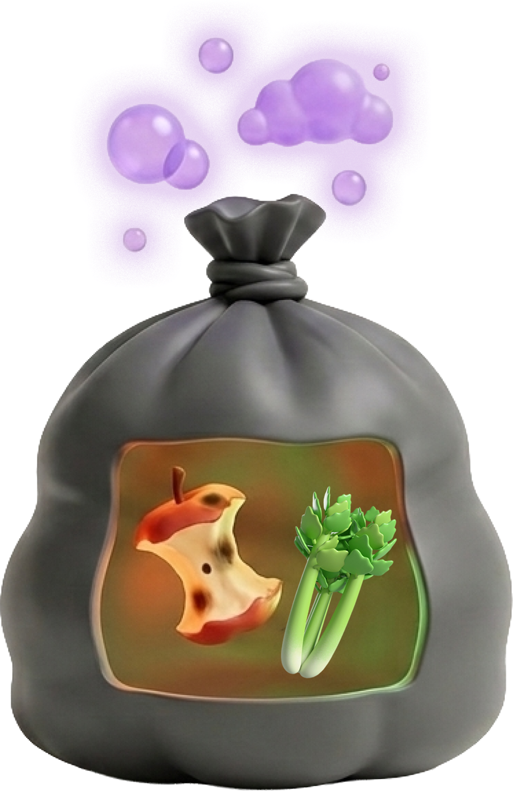
🧩 ZAGADKA 5
Ostatni test Agenta: olej, PSZOK i klimat — jedna układanka. Widzisz całość?
MASZ 10 LAT
I REALNĄ MOC.
Butelka z lejkiem na blacie. Słoik na baterie. Wyprawa z rodzicami do PSZOK-u. Miliony takich decyzji = zmiana, którą widać. Twoja też się liczy.

🔐 WPISZ
TAJNE HASŁO
Masz wszystkie litery? Ułóż je w hasło i otwórz akta sprawy!
KTO BYŁ
WINNY?
MIASTO
ODKORKOWANE.
Rury znów czyste — bo setki osób przerwało łańcuch „ten jeden raz się nie liczy". Ty też już wiesz jak.
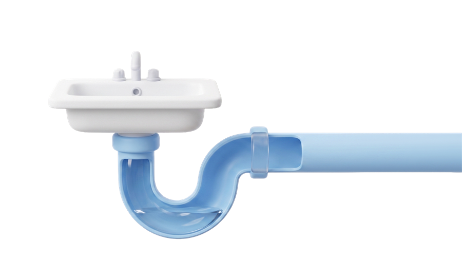
🏅 ODBIERZ DYPLOM
Wpisz swoje dane — dyplom przyda się też nauczycielowi jako dowód ukończenia misji.
SELEKT • EKO-DETEKTYWI
Agent
ukończył(a) misję „Olejomaty i PSZOK — odzyskajmy utraconą energię!" i złamał(a) tajny kod P•S•Z•O•K